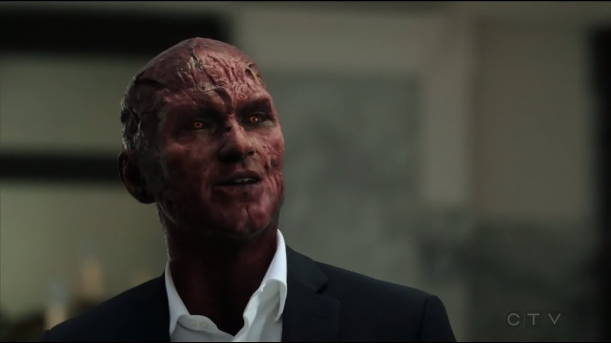

Eközben jön egy új hadnagy, Marcus Pierce, aki egy nyomozás során súlyosan megsérült, de rendkívül gyorsan felépült belőle, ezért Lucifer nyomozni kezd utánna. Kiderül,hogy Pierce nem más, mint Káin, akit arra száműzött Isten hogy örökké járja a földet és ne tudja senkise (még ő maga sem) megölni őt.
Az is kiderül, hogy ő ütötte le őt és vitte a sivatagba, és ő a "sinnerman" akit a rendőrség üldöz a sorozatos gyilkosságok miatt,Lucifer Megegyezik Káinnal hogy együtt találnak rá módot arra hogy a jelölést, ami a karján vaneltüntessék, és megőljék őt. Ahogy haladunk a történetben, Pierce szerelmes lesz Chloe-ba és Lucifer-nek ez cseppet sem tetszik, főleg mikor Pierce megbántja Chloe-t azzal, hogy később mégsem veszi el őt.
Azonban ezzel eltűnik róla a bélyeg és mostmár bármikor meghalhat.Ezalatt Charlotte Richards csatlakozik az LAPD-hez hogy jóvá tegye minden bűnét amit elkövetett, mert mialatt Lucifer édesanyja volt a testében,ő a pokolban volt. Lucifer felfedi neki hogy ő az ördög, és segít neki Amenadiel-lel a jó útra térni.
Az évad végén Pierce véletlenül lelövi Charlotte-ot Amenadiel helyett és ketten együtt mennek fel a menybe Amenadiel-lel. Mikor Lucifer és Chloe megtalálják Pierce-t, leszámolnak vele és Lucifer megöli őt, ám ekkor visszatér az ördögarca és Chloe végül látja, hogy minden amit mondott neki Lucifer Igaz.
